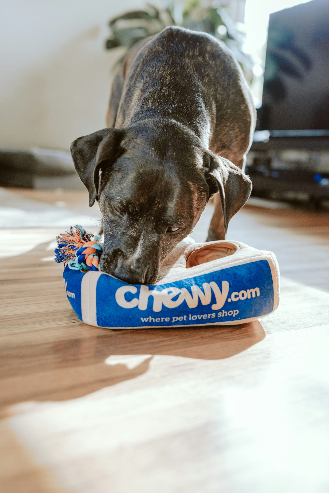

Background video: a dog walking through a sunlit garden with its owner
Smart care for happy paws
When they can't tell you what's wrong.
Joey AI is a personal veterinary companion for dog owners. It reads the breed, the history, and the photo
you just took — then tells you how urgent this is, and what to do before morning.
Joey AI Vet reads like a calm clinician who already has the file open — breed, age, weight, medications,
last meal, last scan. It asks the one question that changes the plan, then tells you whether this is home
rest, a same-day clinic, or the emergency hospital.
Four triage levels in plain language: emergency, urgent, monitor, routine
Answers built on your dog's record, not a generic "dogs sometimes vomit" page
Says clearly when something needs a real vet — and never pretends to be one
Worried owners don't need another forum thread. Joey answers in seconds with what to watch, what to do
in the kitchen, and when to get in the car. Follow-ups remember last week's stomach bug, so you never
start from zero.
2 a.m.In secondsKitchen firstFollow-ups
9:41
Point the camera
Scan a rash, an ear, an eye. Know if it can wait.
Upload a photo and Joey reads colour, location, and pattern against your dog's breed and medications —
then returns a triage level, likely causes, and whether this can wait for your regular vet. Six scan
types: skin and coat, eyes, ears, wounds, dental, and stool.
Skin & coatEyesEarsTriage
9:41
Daily Wag
A health picture no single visit can hold.
Log appetite, energy, stool, weight, and walks in under a minute. Joey turns the week into a score and
flags the drift you'd otherwise miss — the 5% weight drop, the quiet Tuesday, the itch that stopped
being "just seasonal".
Type a food and Joey tells you the risk in the moment, not after a scroll. Inside the app it pairs with
meal logs, calorie tracking, and 7-day plans that respect your dog's allergies and what's already in
the cupboard.
Risk nowMeal logs7-day plansAllergies
9:41
Explore Joey
Everything between visits, in one home.
Chats, scans, vaccines, medications, meals, and records live in a single file — so the next appointment
starts with a history instead of a guess.

AI Vet Chat
Talk to Joey
Live AI vet chat for the moment in front of you. Clear triage, then a plan you can follow tonight.
Bruno threw up twice after midnight. Joey asked the right questions, told me what to watch for, and I slept knowing we weren't guessing from a forum thread.
“
The scan that saved a drive
I photographed Milo's ear at 7 a.m. Joey said it could wait until our regular vet — and the clinic agreed. One clear triage beat an hour of panic Googling.
“
Before it hits the bowl
The free food checker caught xylitol in a “healthy” peanut butter I almost shared. That alone made Joey feel less like an app and more like a second set of eyes.
“
A file the clinic actually wants
Daily Wag logs plus vaccines in one place meant our vet appointment started with history instead of “when did this start?” We walked out with a sharper plan.
people say
Pricing
Start free. Upgrade only if Joey earns it.
Free covers one dog and the daily basics, permanently. Premium unlocks the heavy lifting.
Joey AI is an AI-powered personal veterinary platform for dog owners. You get an AI vet chat, photo scans, daily health tracking, diet tools, vaccination and medication reminders, and medical records — organised around your dog rather than a generic pet article.
No. Joey AI is not a licensed veterinarian and does not diagnose, prescribe, or treat. It helps you triage, prepare for appointments, and keep a history so clinic visits are sharper. When something needs a real examination, Joey says so in plain language. See the veterinary disclaimer.
Yes. Joey is dog-focused on purpose. Other species get a clear limitation rather than invented advice — breed, weight, and dosage context is exactly what makes the guidance useful, and that context does not transfer across species. If you live with a cat, you want a tool built for cats.
Six scan types: skin and coat, eyes, ears, wounds, dental, and stool — plus meal photos for nutrition. Joey reads the image alongside your dog's file, so the same rash gets a different answer for a 4-year-old Labrador than for a 12-week-old puppy. Free accounts include 2 scans a week; Premium is unlimited.
Yes to start, and no card is required. Free includes 1 pet, 1 AI chat per day, 2 image scans per week, Daily Wag tracking, vaccination reminders, and the toxic-food checker. Premium is ₹199 per month or ₹1,799 per year and begins with a 7-day free trial. Individual PDF reports start at ₹49 with no subscription at all.
Search knows dogs in general. Joey knows yours — breed, weight, medications, last scan, last meal. That context is why a Labrador that vomited twice gets a different plan than a puppy that swallowed a grape. You still confirm anything serious with your vet.
Your records stay in your account. Joey does not sell personal data, and any share link you create for a vet can be revoked at any time. You can export or delete your data from Settings. Full detail is in the Privacy Policy.
Any time, from Settings → Subscription. You keep Premium until the end of the period you have already paid for, then move back to Free. Nothing is deleted — your records stay, you simply return to the Free limits.